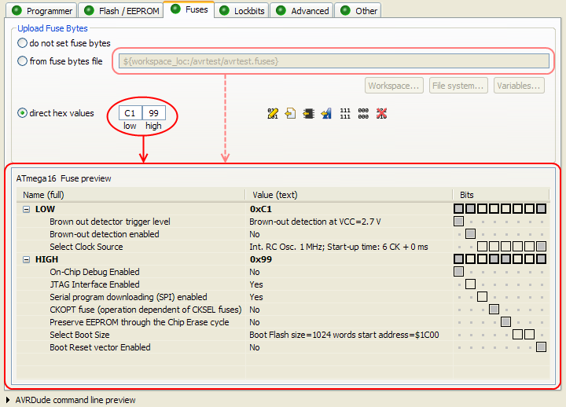
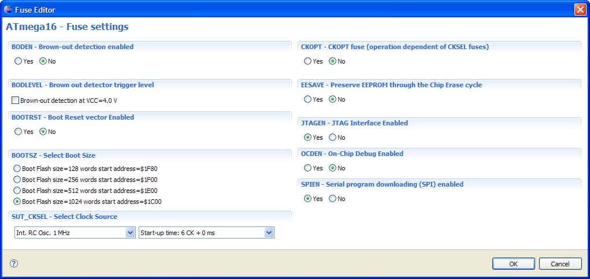
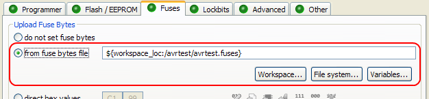
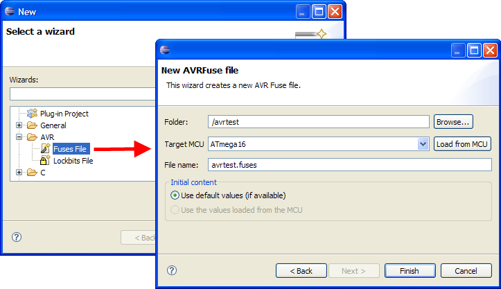
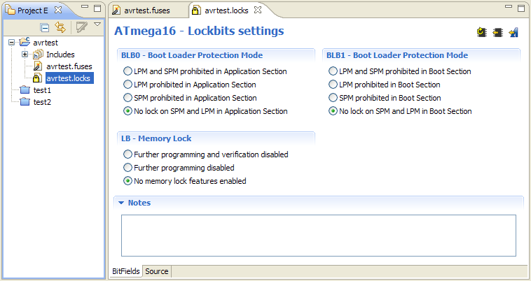
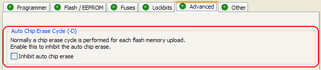
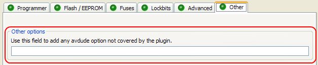
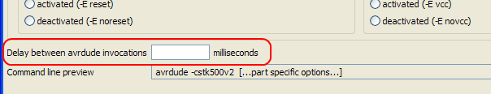
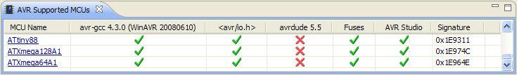
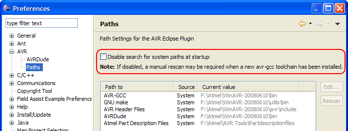

Fuse and Lockbits Settings
Fuses / Lockbits Preview
There is now a descriptive preview of the selected fuses / lockbits.

Fuse / Lockbits tools
The direct hex values can now be
-
 edited,
edited,  copied from the selected fuse / lockbits file,
copied from the selected fuse / lockbits file, read from an attached MCU,
read from an attached MCU, set to a reasonable default value (derived from the Atmel part description files, not available for some MCUs), or
set to a reasonable default value (derived from the Atmel part description files, not available for some MCUs), or- set to all 1s (
 ), all 0s (
), all 0s ( ) or to nothing (
) or to nothing ( )
)
Fuse and Lockbits Editor
If the direct hex values are edited, a new and simple to use fuse editor dialog can be used:

Fuses files and Lockbits files
To reuse the same fuse and lockbits settings for multiple build configurations and even multiple projects, they can now be stored in special files and shared as appropriate. Fuses files have the file extension .fuses, while lockbits file end with .locks.
These files can be used instead of the direct hex values on the fuses / lockbits tab of the AVRDude project property settings page.

Fuse / Lockbits File Wizard
There are two (identical) wizards to create new fuses and lockbits files.

Fuse / Lockbits File Editor
Fuse files and lockbits files can be edited with the same easy-to-use editor as the direct hex values.

Other new / improved features
New AVRDude Options
The -D option to inhibit the auto chip erase has been added.

While the AVR Eclipse Plugin now supports all options of the current AVRDude version 5.5, there is a new field to add future avrdude options not yet covered by the plugin.

AVRDude Invocation Delay
The plugin often executes avrdude repeatedly. This sometimes causes problems with USB programmer devices when the USB port is not released quickly enough by the previous avrdude invocation.
A new delay option has been added to the programmer configuration dialog to instruct the plugin to wait the specified amount of milliseconds between avrdude invocations order to give the USB port more time to close.

ATXmega Support
The plugin now supports the ATXmega series of AVR MCUs. The extend of the support depends on the installed avr-gcc toolchain. ATXmega MCUs are supported with avr-gcc 4.3.0 or later, but the current avrdude release 5.5 is still lacking ATXmega capabilities.

Improved Path Handling
On non-Windows systems startup time of the plugin was very slow on large systems, because large parts of the filesystem were scanned to find the installed avr-gcc toolchain. With version 2.3 of the Plugin, the system is scanned only once and the found paths are stored and used on the next startup. This greatly reduces the plugin startup time.
There is an option in the AVR paths preferences to restore the old behavior of scanning the system each time Eclipse is started.
Note: on Windows Systems this option is by default off (= autoscan on), because on Windows the registry is used to look up the paths, which takes a negligible amount of time.